Algo5 noise variants: identifiability and convergence
This notebook follows up on the stochastic algorithms section of the RL exploration notebook. The identifiability problem diagnosed here is documented in meta/2026-02-10_algo5-identifiability-analysis.md.
Motivation
The noisy-gradient model (algo5) with gradient-scaled noise has good parameter recovery in simulation but shows bimodal posterior behavior when fitted to real data via MCMC. Chains get stuck exploring one of two modes:
| Mode | \(\tau\) | \(\delta_0\) | \(\sigma_g\) |
|---|---|---|---|
| A | high | high | low |
| B | low | low | high |
This arises from a three-way multiplicative ridge in the likelihood. The arc transition is:
\[ x_{t+1} \sim \mathcal{N}\!\left(x_t + \delta_t\, g_t(\tau),\; (\delta_t\,\sigma_g)^2\right) \]
where \(g_t \approx C/\tau\) near the decision boundary, so the mean depends on \(\delta_0/\tau\) and the variance on \((\delta_0 \sigma_g)^2\). The approximate invariance
\[ (\tau, \delta_0, \sigma_g) \to (\lambda\tau,\; \lambda\delta_0,\; \sigma_g/\lambda) \]
preserves both, creating a ridge that MCMC struggles to traverse.
This notebook investigates alternative noise formulations that maintain the gradient-ascent spirit of algo5 while improving estimation geometry. For each variant we check convergence behavior in forward simulation — a prerequisite before attempting estimation.
Reference: current model (gradient-scaled noise)
The current model scales noise by the learning rate: \(\text{SD} = \delta_t \sigma_g\). Because the noise decays with \(\delta_t\), even large \(\sigma_g\) does not prevent convergence.
ribbon_summary_runs(
alg_list = list(
deterministic = algo5_noisy_grad(tau = 0.025, delta0 = 0.1, sigma_g = 0),
sigma_g_0.5 = algo5_noisy_grad(tau = 0.025, delta0 = 0.1, sigma_g = 0.5),
sigma_g_1 = algo5_noisy_grad(tau = 0.025, delta0 = 0.1, sigma_g = 1),
sigma_g_2 = algo5_noisy_grad(tau = 0.025, delta0 = 0.1, sigma_g = 2),
sigma_g_5 = algo5_noisy_grad(tau = 0.025, delta0 = 0.1, sigma_g = 5)
),
cs = c(4, 8),
n_trials = 1000,
n_runs = 50,
add_oracle = TRUE,
oracle_fun = \(c) find_optimum_sdm(c, kappa = 3),
seed = 1
) + ggplot2::theme(legend.position = "bottom")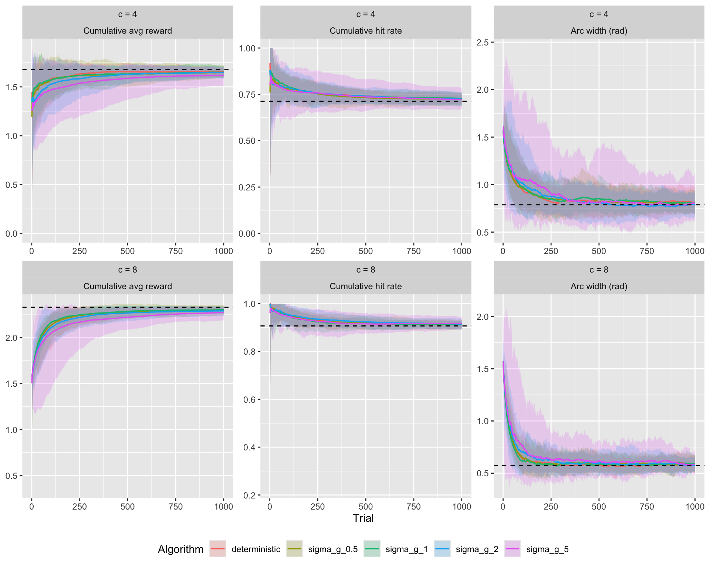
spaghetti_single_runs(
alg_list = list(noisy_grad = algo5_noisy_grad(tau = 0.025, delta0 = 0.1, sigma_g = 2)),
cs = c(0, 2, 4, 8, 16),
n_trials = 800,
n_runs = 10,
init_arc = pi / 2,
plot_what = c("reward", "hit", "a"),
add_oracle = TRUE,
oracle_fun = \(c) find_optimum_sdm(c, kappa = 3),
seed = 123
)
Proposal 1: Constant noise
Replace \(\delta_t \sigma_g\) with a constant \(\sigma_w\):
\[ x_{t+1} = x_t + \delta_t\, g_t(\tau) + \sigma_w\, \varepsilon_t \]
This completely decouples \(\sigma_w\) from \(\delta_0\), breaking the variance ridge. However, since \(\sigma_w\) does not decay, the noise dominates late-trial dynamics where \(\delta_t \to 0\). This is equivalent to the “logit noise” variant explored earlier, which was shown to destroy algo5’s convergence.
ribbon_summary_runs(
alg_list = list(
deterministic = algo5_noisy_grad(tau = 0.025, delta0 = 0.1, sigma_g = 0),
sigma_w_0.01 = algo5_const_noise(tau = 0.025, delta0 = 0.1, sigma_w = 0.01),
sigma_w_0.05 = algo5_const_noise(tau = 0.025, delta0 = 0.1, sigma_w = 0.05),
sigma_w_0.1 = algo5_const_noise(tau = 0.025, delta0 = 0.1, sigma_w = 0.1),
sigma_w_0.2 = algo5_const_noise(tau = 0.025, delta0 = 0.1, sigma_w = 0.2)
),
cs = c(4, 8),
n_trials = 1000,
n_runs = 50,
add_oracle = TRUE,
oracle_fun = \(c) find_optimum_sdm(c, kappa = 3),
seed = 1
) + ggplot2::theme(legend.position = "bottom")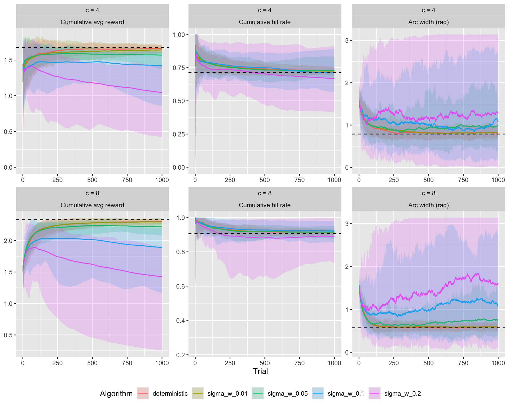
spaghetti_single_runs(
alg_list = list(const_noise = algo5_const_noise(tau = 0.025, delta0 = 0.1, sigma_w = 0.1)),
cs = c(0, 2, 4, 8, 16),
n_trials = 800,
n_runs = 10,
init_arc = pi / 2,
plot_what = c("reward", "hit", "a"),
add_oracle = TRUE,
oracle_fun = \(c) find_optimum_sdm(c, kappa = 3),
seed = 123
)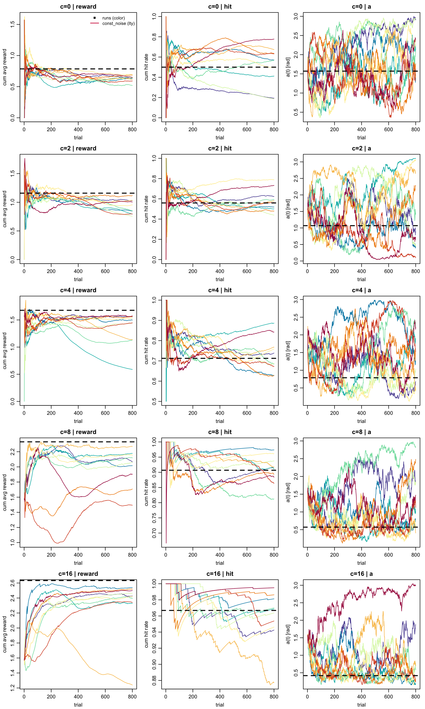
As expected, constant noise prevents convergence to a stable arc. Late-trial variability remains high because the noise floor \(\sigma_w\) overwhelms the vanishing gradient step. This confirms the earlier finding from the logit-noise experiments. The model would be identifiable for estimation but generates unrealistic trajectories.
Proposal 2: Langevin noise scaling
Use \(\sqrt{\delta_t}\) scaling instead of \(\delta_t\):
\[ x_{t+1} = x_t + \delta_t\, g_t(\tau) + \sqrt{\delta_t}\;\sigma_L\, \varepsilon_t \]
The noise still decays but more slowly than the gradient step. Crucially, \(\delta_0\) enters the mean linearly and the variance as \(\delta_0^{1/2}\), so the variance ridge \(\delta_0 \sigma_g = \text{const}\) is replaced by \(\delta_0^{1/2} \sigma_L = \text{const}\) — a much tighter constraint that breaks the three-way invariance. But sigma will have to be much smaller, otherwise convergence is once again destroyed.
ribbon_summary_runs(
alg_list = list(
deterministic = algo5_noisy_grad(tau = 0.025, delta0 = 0.1, sigma_g = 0),
sigma_L_0.5 = algo5_langevin(tau = 0.025, delta0 = 0.1, sigma_L = 0.5),
sigma_L_1 = algo5_langevin(tau = 0.025, delta0 = 0.1, sigma_L = 1),
sigma_L_2 = algo5_langevin(tau = 0.025, delta0 = 0.1, sigma_L = 2),
sigma_L_5 = algo5_langevin(tau = 0.025, delta0 = 0.1, sigma_L = 5)
),
cs = c(4, 8),
n_trials = 1000,
n_runs = 50,
add_oracle = TRUE,
oracle_fun = \(c) find_optimum_sdm(c, kappa = 3),
seed = 1
) + ggplot2::theme(legend.position = "bottom")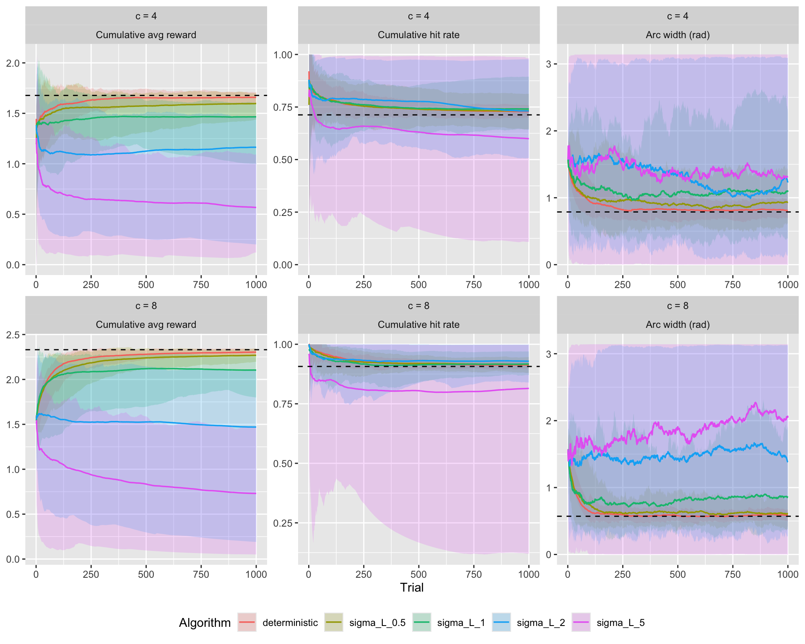
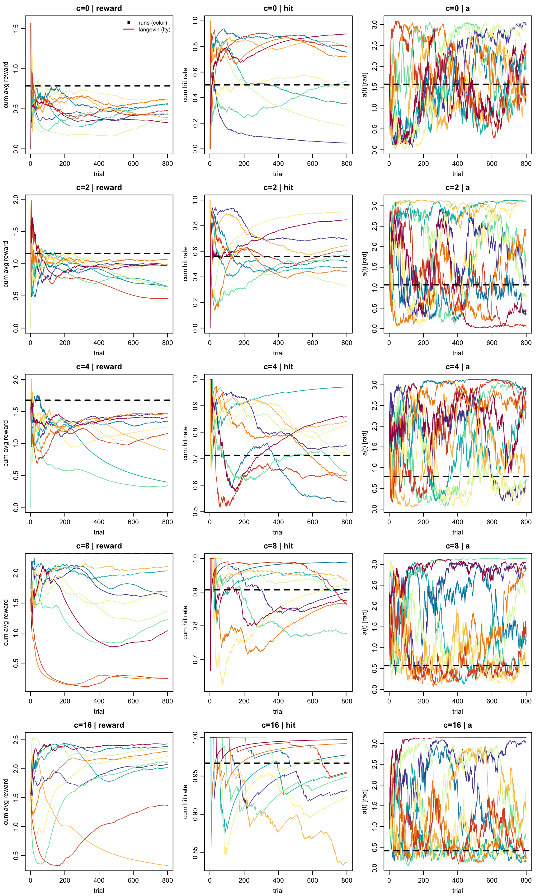
Direct comparison: noise scaling regimes
Compare all three noise scalings at matched effective noise levels. For a fair comparison at a “typical” trial (\(t = 100\), \(\delta_0 = 0.1\)): \(\delta_t \approx 0.01\), so we match:
- Gradient-scaled: \(\delta_t \sigma_g = 0.01 \times 2 = 0.02\)
- Langevin: \(\sqrt{\delta_t}\, \sigma_L = 0.1 \times 0.2 = 0.02\)
- Constant: \(\sigma_w = 0.02\)
Interestingly, there is little difference between them, as the plot below shows. Perhaps constant noise might still work as long as we keep it low.
ribbon_summary_runs(
alg_list = list(
`grad-scaled (sig_g=2)` = algo5_noisy_grad(tau = 0.025, delta0 = 0.1, sigma_g = 2),
`langevin (sig_L=0.2)` = algo5_langevin(tau = 0.025, delta0 = 0.1, sigma_L = 0.2),
`constant (sig_w=0.02)` = algo5_const_noise(tau = 0.025, delta0 = 0.1, sigma_w = 0.02)
),
cs = c(4, 8),
n_trials = 1000,
n_runs = 50,
add_oracle = TRUE,
oracle_fun = \(c) find_optimum_sdm(c, kappa = 3),
seed = 1
) + ggplot2::theme(legend.position = "bottom")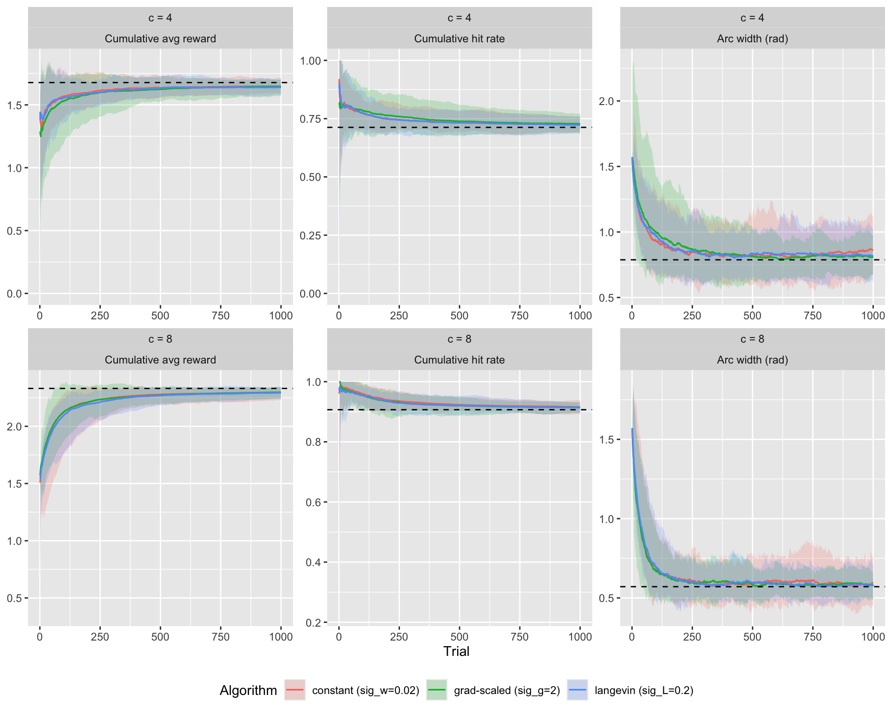
Here is how the resulting arc trajectory variance changes under the three models:
sigma_grid <- list(
`grad-scaled` = c(0.5, 1, 2, 5),
langevin = c(0, 0.1, 0.2, 0.3, 0.4, 0.5),
constant = c(0, 0.01, 0.02, 0.03, 0.04, 0.05)
)
make_alg <- list(
`grad-scaled` = \(s) algo5_noisy_grad(tau = 0.025, delta0 = 0.1, sigma_g = s),
langevin = \(s) algo5_langevin(tau = 0.025, delta0 = 0.1, sigma_L = s),
constant = \(s) algo5_const_noise(tau = 0.025, delta0 = 0.1, sigma_w = s)
)
n_runs <- 200
n_trials <- 1000
cs <- c(4, 8)
kappa <- 3
set.seed(42)
var_df <- purrr::map_dfr(names(sigma_grid), \(model) {
purrr::map_dfr(sigma_grid[[model]], \(sig) {
purrr::map_dfr(cs, \(c_val) {
within_vars <- vapply(seq_len(n_runs), \(r) {
a <- run_arc_algorithm(
arc_update_fun = make_alg[[model]](sig),
c = c_val, kappa = kappa,
init_arc = pi / 2, n_trials = n_trials
)$a
var(a)
}, numeric(1))
tibble(
model = model,
sigma = sig,
c = c_val,
var_a = within_vars
)
})
})
})
var_df$sigma_label <- factor(var_df$sigma)
var_df$c_label <- paste0("c = ", var_df$c)ggplot(var_df, aes(x = sigma_label, y = var_a)) +
geom_boxplot(outlier.size = 0.8) +
facet_wrap(c_label ~ model, scales = "free") +
labs(
x = expression(sigma), y = "Within-run Var(arc width)",
title = "Within-run arc variance by noise model and sigma"
) +
theme_minimal(base_size = 13) +
theme(legend.position = "bottom")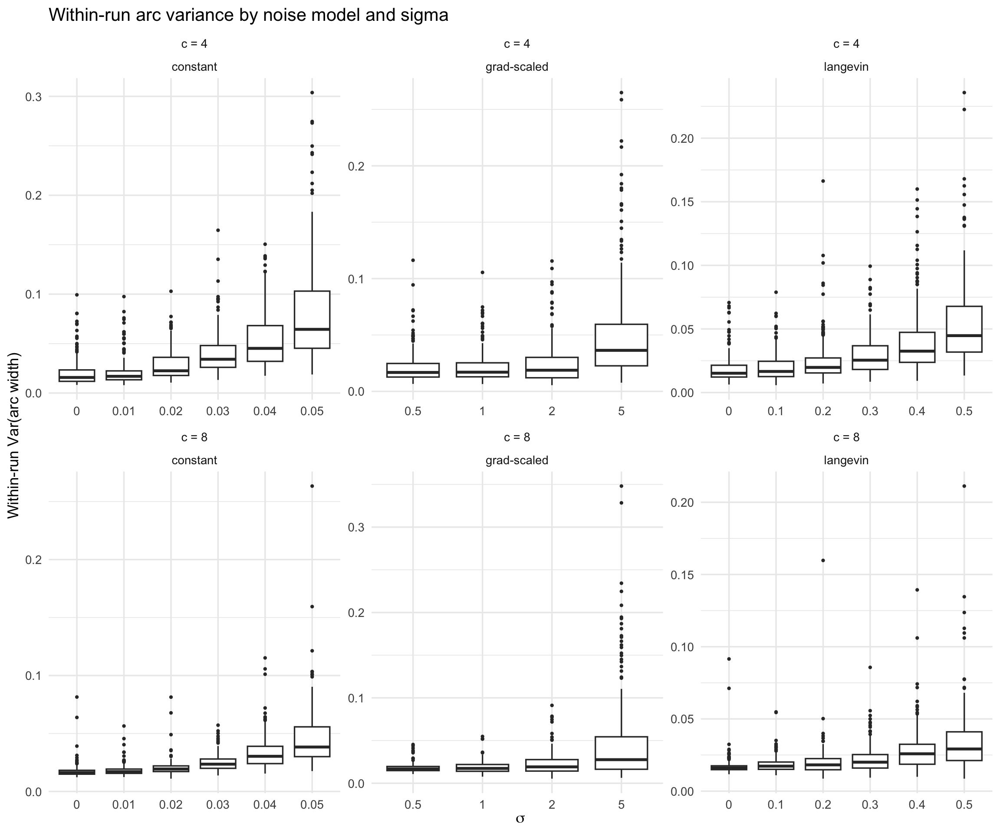
Proposal 3: Reparametrize the existing model
This proposal keeps the original generative model exactly but estimates \((\phi, \omega, \tau)\) instead of \((\tau, \delta_0, \sigma_g)\):
\[ \phi = \delta_0/\tau, \quad \omega = \delta_0 \cdot \sigma_g \]
Since the generative model is identical, simulations are the same as the reference. What changes is the posterior geometry during estimation. The ridge direction \((\lambda\tau, \lambda\delta_0, \sigma_g/\lambda)\) maps to \((\lambda\tau, \phi, \omega)\) — only \(\tau\) moves while \(\phi\) and \(\omega\) stay fixed. This concentrates the degeneracy in one dimension.
No simulation needed here — we plot the original model’s ridge structure instead.
lambda_grid <- seq(0.2, 5, length.out = 200)
tau0 <- 0.025; delta0_0 <- 0.1; sigma_g0 <- 2
original <- tibble(
lambda = lambda_grid,
tau = tau0 * lambda_grid,
delta0 = delta0_0 * lambda_grid,
sigma_g = sigma_g0 / lambda_grid,
phi = delta0_0 / tau0,
omega = delta0_0 * sigma_g0
)
p1 <- ggplot(original, aes(x = tau, y = delta0)) +
geom_line(linewidth = 1) +
geom_point(data = filter(original, lambda == 1), color = "red", size = 3) +
labs(title = "Original: tau-delta ridge", x = expression(tau), y = expression(delta[0]))
p2 <- ggplot(original, aes(x = delta0, y = sigma_g)) +
geom_line(linewidth = 1) +
geom_point(data = filter(original, lambda == 1), color = "red", size = 3) +
labs(title = "Original: delta-sigma_g ridge", x = expression(delta[0]), y = expression(sigma[g]))
p3 <- ggplot(original, aes(x = tau, y = phi)) +
geom_line(linewidth = 1) +
geom_point(data = filter(original, lambda == 1), color = "red", size = 3) +
labs(title = "Reparametrized: tau vs phi", x = expression(tau), y = expression(phi == delta[0]/tau))
p4 <- ggplot(original, aes(x = tau, y = omega)) +
geom_line(linewidth = 1) +
geom_point(data = filter(original, lambda == 1), color = "red", size = 3) +
labs(title = "Reparametrized: tau vs omega", x = expression(tau), y = expression(omega == delta[0] %.% sigma[g]))
library(patchwork)
(p1 | p2) / (p3 | p4)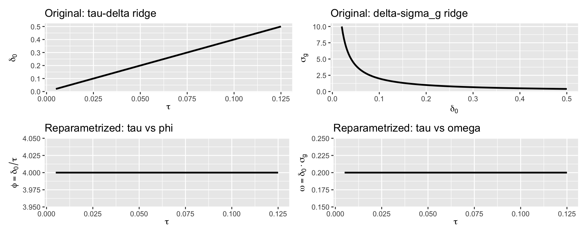
In the original parametrization, the ridge sweeps through both \(\tau\)–\(\delta_0\) and \(\delta_0\)–\(\sigma_g\) panels (top row). In the reparametrized space (bottom row), \(\phi\) and \(\omega\) are flat along the ridge — MCMC only needs to marginalize over \(\tau\).
Proposal 4: Fix \(\tau\)
The temperature \(\tau\) controls gradient smoothness but has little direct scientific meaning. Fixing it at a small value eliminates one parameter and the \(\tau\)–\(\delta_0\) coupling entirely. The model reduces to a two-parameter arc transition \((c, \kappa, \delta_0, \sigma_g)\) with the same geometry as algo4.
We verify that convergence behavior is mostly insensitive to the choice of \(\tau <= 0.05\):
ribbon_summary_runs(
alg_list = list(
`tau=0.005` = algo5_noisy_grad(tau = 0.005, delta0 = 0.1, sigma_g = 2),
`tau=0.01` = algo5_noisy_grad(tau = 0.01, delta0 = 0.1, sigma_g = 2),
`tau=0.025` = algo5_noisy_grad(tau = 0.025, delta0 = 0.1, sigma_g = 2),
`tau=0.05` = algo5_noisy_grad(tau = 0.05, delta0 = 0.1, sigma_g = 2),
`tau=0.1` = algo5_noisy_grad(tau = 0.1, delta0 = 0.1, sigma_g = 2)
),
cs = c(4, 8),
n_trials = 1000,
n_runs = 50,
add_oracle = TRUE,
oracle_fun = \(c) find_optimum_sdm(c, kappa = 3),
seed = 1
) + ggplot2::theme(legend.position = "bottom")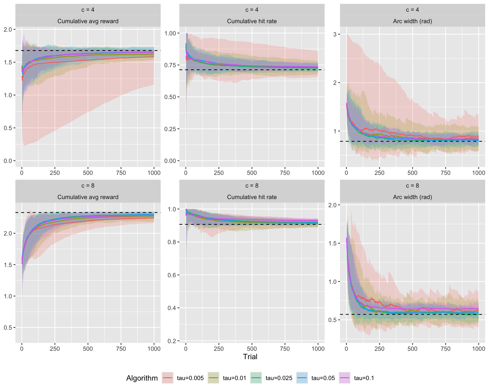
If convergence and asymptotic behavior are similar across a range of \(\tau\) values, the parameter adds little information and can safely be fixed.
The question is whether and how much \(\tau\) adds to the observed variance of the arcs. Let’s test that:
Here is how the resulting arc trajectory variance changes with tau:
tau_grid <- seq(0.01, 0.05, 0.005)
n_runs <- 200
n_trials <- 1000
cs <- c(4, 8)
kappa <- 3
set.seed(42)
var_df <- purrr::map_dfr(tau_grid, \(tau) {
purrr::map_dfr(cs, \(c_val) {
within_vars <- vapply(seq_len(n_runs), \(r) {
a <- run_arc_algorithm(
arc_update_fun = algo5_noisy_grad(tau = tau, delta0 = 0.1, sigma_g = 2),
c = c_val, kappa = kappa,
init_arc = pi / 2, n_trials = n_trials
)$a
var(a)
}, numeric(1))
tibble(tau = tau, c = c_val, var_a = within_vars)
})
})
var_df$tau_label <- factor(var_df$tau)
var_df$c_label <- paste0("c = ", var_df$c)ggplot(var_df, aes(x = tau_label, y = var_a)) +
geom_boxplot(outlier.size = 0.8) +
facet_wrap(~c_label, scales = "free_y") +
labs(
x = expression(tau), y = "Within-run Var(arc width)",
title = "Within-run arc variance by tau"
) +
theme_minimal(base_size = 13)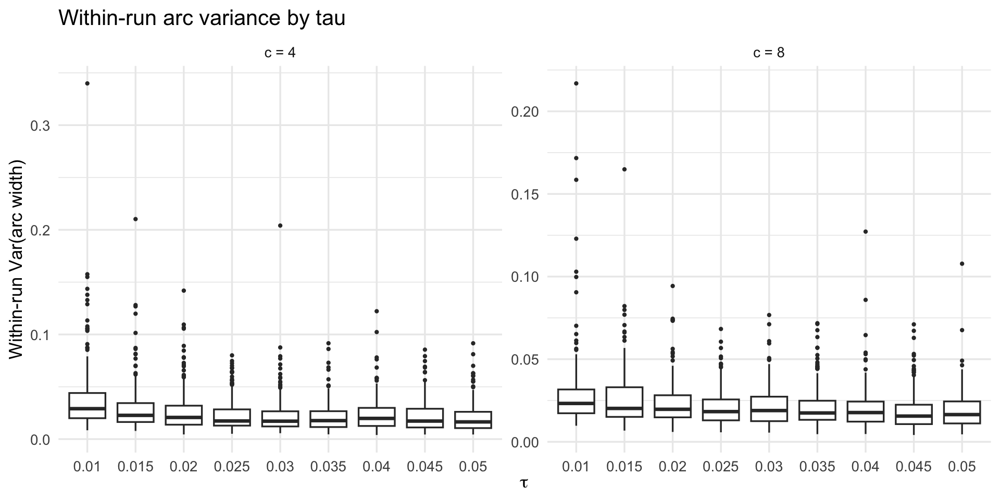
Comparison across all proposals: Langevin vs noise-gradient vs fixed-tau
The proposals that maintain convergence (Langevin, reparametrize, fix-tau) produce identical or nearly identical forward trajectories — they differ only in estimation geometry. Compare the two models with genuinely different dynamics:
ribbon_summary_runs(
alg_list = list(
`noisy-grad` = algo5_noisy_grad(tau = 0.025, delta0 = 0.1, sigma_g = 2),
`langevin` = algo5_langevin(tau = 0.025, delta0 = 0.1, sigma_L = 0.5),
`const-noise` = algo5_const_noise(tau = 0.025, delta0 = 0.1, sigma_w = 0.05)
),
cs = c(4, 8),
n_trials = 1000,
n_runs = 50,
add_oracle = TRUE,
oracle_fun = \(c) find_optimum_sdm(c, kappa = 3),
seed = 1
) + ggplot2::theme(legend.position = "bottom")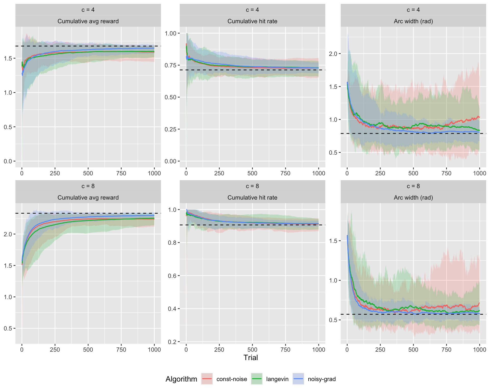
Summary
| Variant | Noise SD | Converges? | Ridge broken? | Parameters |
|---|---|---|---|---|
| Current (gradient-scaled) | \(\delta_t \sigma_g\) | Yes | No — three-way ridge | \(\tau, \delta_0, \sigma_g\) |
| Proposal 1 (constant) | \(\sigma_w\) | No | Yes — fully | \(\tau, \delta_0, \sigma_w\) |
| Proposal 2 (Langevin) | \(\sqrt{\delta_t}\,\sigma_L\) | Yes | Partially — weakened | \(\tau, \delta_0, \sigma_L\) |
| Proposal 3 (reparametrize) | \(\delta_t \sigma_g\) | Yes | Concentrated in \(\tau\) | \(\phi, \omega, \tau\) |
| Proposal 4 (fix \(\tau\)) | \(\delta_t \sigma_g\) | Yes | Yes — \(\tau\) eliminated | \(\delta_0, \sigma_g\) |
| Proposal 5 (error-correction) | \(\sigma_w\) | Depends on \(\sigma_w\) | N/A — no \(\tau\) | \(\delta_0, \sigma_w\) |
Recommendations:
- Proposal 2 (Langevin) is the best single change — it preserves convergence and substantially weakens the ridge.
- Proposal 4 (fix \(\tau\)) is the simplest fix if \(\tau\) sensitivity analysis confirms stability.
- Proposal 3 (reparametrize) can be combined with any noise variant to further improve estimation.
- Proposal 5 (error-correction) is worth exploring as a simpler alternative that avoids the gradient machinery entirely.